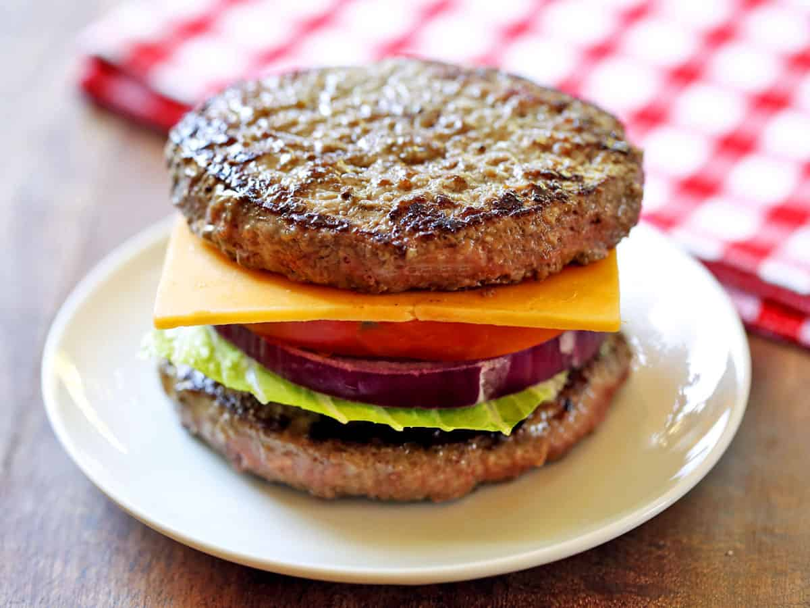

Home Page
Bunless Burger Recipe

Description:
This recipe will help you create a keto-friendly burger. You definitely won't miss the bun on this one! Simple and juicy!
Ingredients:
- Ground Beef Patties: 4 1/4 lb patties
- Salt: ½ tsp
- Black Pepper: ½ tsp
- Mustard: 2 tsp
- Lettuce: 4 leaves
- Tomatoes: 2 slices
- Red Onion: 2 slices
- Cheddar: 2 slices
Steps:
- Season the beef patties with salt and pepper.
- Cook them on a cast iron griddle over medium-high heat to your desired doneness.
- Transfer the cooked patties to a plate and allow them to rest, loosely covered in foil, for 5 minutes.
- While the meat is resting, assemble the remaining ingredients.
- To assemble the "burgers," grab two plates.
- Place one cooked patty on each plate.
- Spread with mustard and/or mayo if you'd like.
- Add lettuce, onion, tomato, cheese and then another patty.
- Serve immediately!
- Bon apetit!
Back to Top